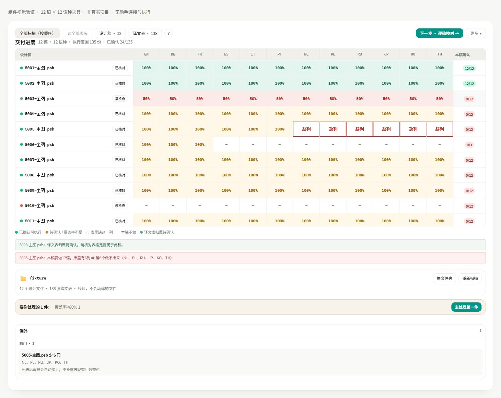
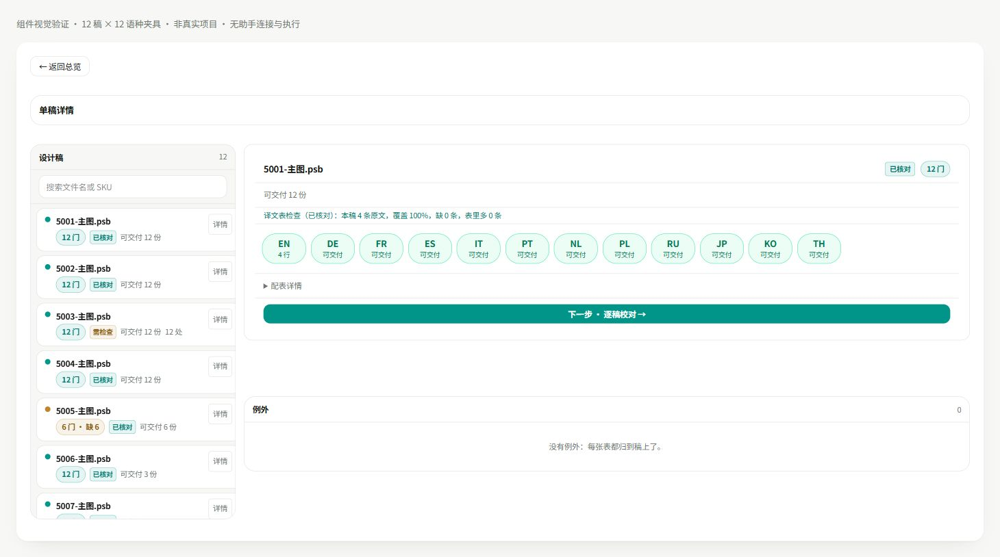
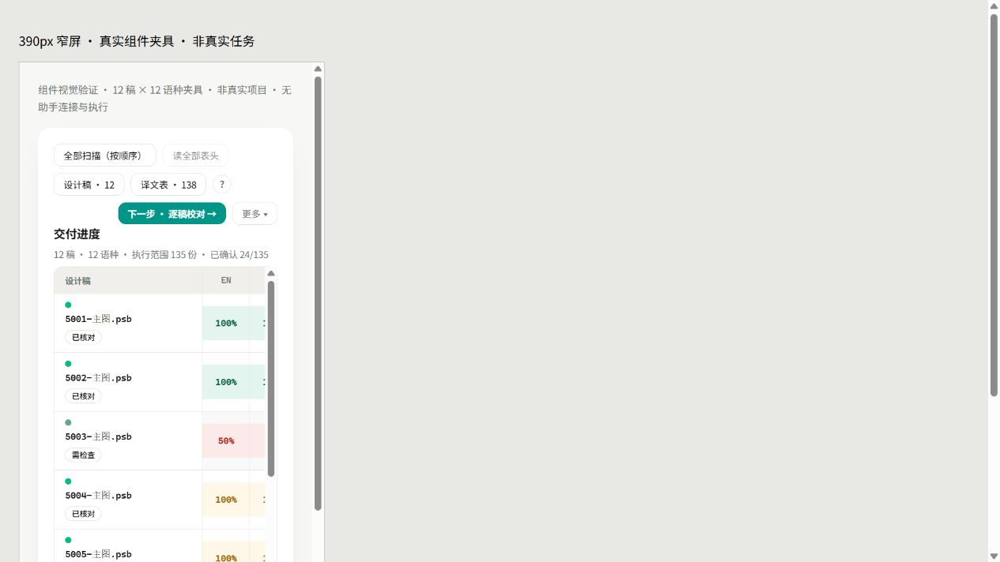
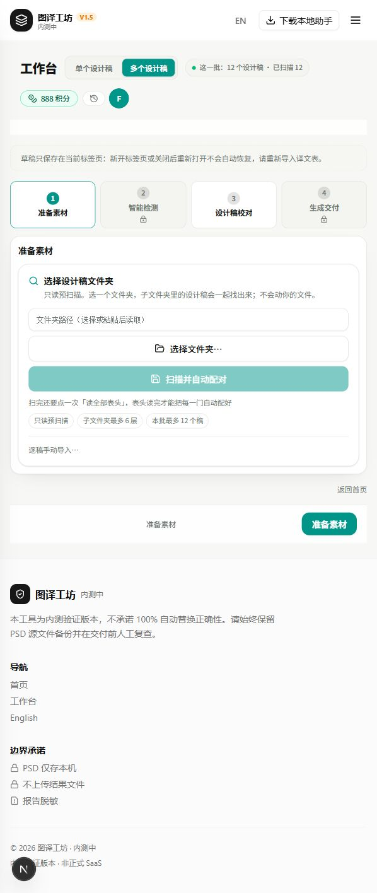

图译工坊 · 2026-10-29 11:28
本地多稿工作台已完成本轮精简。你指出的“交付物矩阵、单稿详情、译库与切片、现状对照”整排标签已移除。首页直接显示交付进度；设计稿和译文表通过工具栏按需进入，进入后可以返回总览。
上一轮把参考稿里的评审导航和内部解释一起搬进产品，造成页面冗余。本轮推翻“完整照搬四视图就是完成”的判断：参考稿用于展示论证的内容，不应全部成为用户界面。
当前 localhost:3000 已应用修改。开发热更新后，现有标签页显示文件夹入口，需要重新载入批次；本轮没有操作设计稿文件。
已删除：顶部整排四视图标签、现状对照页、历史效率对比卡、空态里的假视图和零计数、版本更新说明、手工点击次数与矩阵格数统计，以及底部重复的检查依据统计。
已删除或缩短：行列结构教学、数据取数口与会话摘要解释、切换视图不会改变范围等实现保证、重复标题，以及“后台已自动写入”等开发口吻。可折叠的配表详情保留真实归属事实。
已改写：实证、声明、指纹、快照等术语在本轮覆盖界面中改成已核对、已指定、重复设计稿、确认内容或故障记录。第4步保存失败仍会明确停止，并说明哪些语言未保存、是否冻结积分和下一步如何重试。
保留：重新扫描、逐稿查看、译文表归属与切片、未分配行确认、缺语言列、范围剔除、共享表实际使用行数，以及不写入和不计费的后果。这些内容直接影响结果，不能随开发解释一起删掉。
独立只读复审返回 CLEAN，阻断项0条；追加复核第4步与故障上传文案，要求保留停止、不冻结积分、记录采集时间、来源不明/其他授权、容量上限和收件不等于本次故障送达等信息，补丁已保留。
第一步：以开工字节副本和实际可见文案列删减清单，区分内部解释与必要的操作后果。已完成。
第二步：移除冗余视图栏和说明卡，把设计稿、译文表操作收进工具栏；整理空态、间距、标题和状态名称。已完成。
第三步：同步英文译文，更新受影响的显示要求检查；保留范围、确认、覆盖率和执行限制的行为检查。已完成。
第四步：独立复审、组件测试、静态检查和浏览器入口核验；报告同时保存 Markdown 与 HTML。已完成。
总览入口、设计稿和译文表入口及返回按钮：worktrees/develop/src/components/workbench/step1-stage-view.tsx:1391、1429、1432。交付进度标题：worktrees/develop/src/components/workbench/coverage-matrix.tsx:168。空态直接呈现素材入口：worktrees/develop/src/components/workbench/batch-workspace-empty.tsx:6。
共享表使用范围：worktrees/develop/src/components/workbench/step1-stage-view.tsx:2464。表格变更后的重新确认提示：同文件:2899。必要的未分配行确认保留在同文件:2859。
检查详情标题：worktrees/develop/src/components/workbench/why-details.tsx:16；简短匹配状态：worktrees/develop/src/components/workbench/workbench-view.tsx:6278。
第4步停止与重试提示：worktrees/develop/src/components/workbench/execute-step.tsx:1021、1038、1044；低覆盖仍须明确确认：同文件:2454、2461。故障记录上传状态：worktrees/develop/src/components/workbench/support-upload-dialog.tsx:66、99、131。
本轮改动范围还包括 batch-workspace.css、evidence-label.ts、stage-folder-gate.tsx、account-gate.tsx、英文词典、三个定向组件测试和两个显示要求检查脚本。开工副本：tmp/ui-copy-cleanup-20261029/。没有改归属算法、执行范围或积分结算逻辑。
npx tsc --noEmit：退出码0。三个定向组件测试：58/58通过。测试日志：tmp/ui-copy-cleanup-20261029/final-components.log。
工作台显示要求检查：通过。模拟稿静态检查：96项、失败0；原有推迟项仍明确列出，不当作全部功能已完成。批量工作台保护检查：60项通过。用户可见文案检查：49项通过。
文案检查额外执行了故意注入旧“现状对照”文字的反例：检查确实报错；正常界面前后均通过。证据：worktrees/develop/tests/unit/step1-stage-view.test.tsx:193、217。
定向 ESLint：退出码0，0错误、28条警告；没有把警告写成零。git diff --check：退出码0。
浏览器实际点击：真实 Step1 组件的12稿×12语种夹具，设计稿详情→返回总览→译文表→表格详情均可进入，未保存或触发生成。矩阵144格继续呈现；390px窄屏工具栏正常换行，矩阵可以滚动。截图与真实本地入口截图均在本报告同目录的“证据_20261029_工作台内部说明清理”。
真实 localhost:3000 页面核对：旧视图栏、现状对照和版本说明均未出现。填充矩阵的操作证据来自真实组件夹具，不冒充用户项目或Photoshop实批验收。临时夹具页面和服务已关闭。
本轮完成本地界面及文案调整。未提交本轮改动，未部署测试站或生产，未操作Photoshop生成；真实项目满批生成仍属后续验收。Git实测HEAD为518a2dae，保留同一工作树里其他会话的已有改动。
Graphify命令不可用，退出码1，且项目已标明图谱陈旧，因此直接查源文件，没有把图谱结果当业务证据。
台账投影预演失败，内部退出码1：飞书身份签名密钥不可用（dpop_key_missing）。受保护请求未发送，没有实际投影或凭据降级；不阻塞本地交付。Markdown报告通过指定机器人另行发送。
记录时间：2026-10-29 11:28（Asia/Singapore）。



